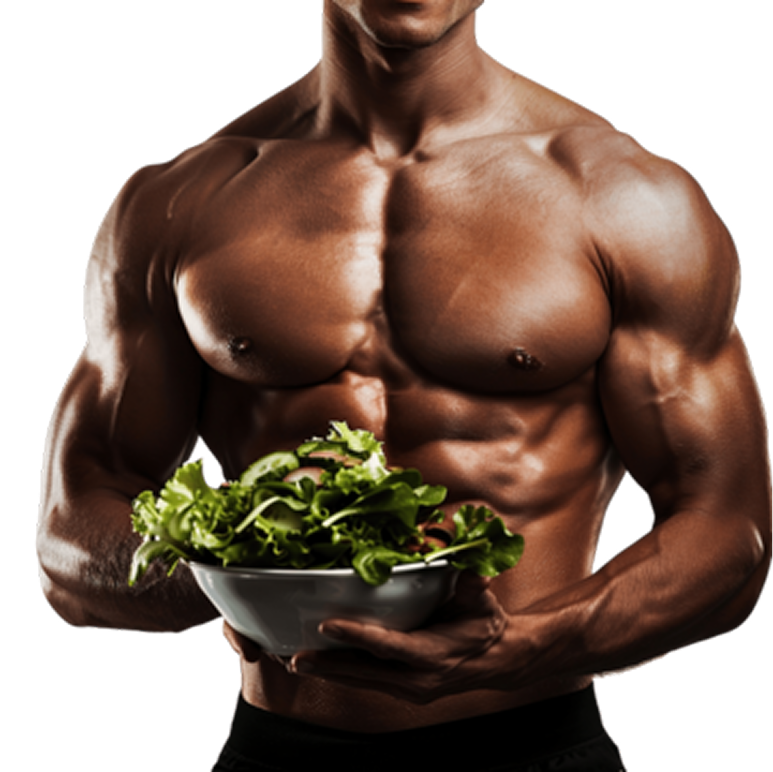

-
Saúde
FísicaTransforme a atividade
- Patrícia Cassol Eickhoff
física num vício, que ele
dará habilidades para
vencer outros. -

A prática de atividade físicas,
além de favorecer a
autoestima e o
bom
funcionamento do organismo,
fortalece o corpo e
estimula a
liberação de neurotransmissores
como serotonina, dopamina e noradrenalina.
O movimento voluntário com gasto energético acima do repouso, traz diversos benefícios: Reduz estresse, ansiedade e sintomas depressivos, melhora o sono, a aprendizagem, a força, o equilíbrio, a flexibilidade e também promove a socialização.
Atividade
Física
Como integrar exercícios
físicos na rotina:
-
Comece aos poucos: Não precisa ser atleta para começar. Comece com 15 minutos de caminhada e aumente gradualmente.
-
Use o dia a dia a seu favor: Prefira escadas em vez de elevador, desça do ônibus um ponto antes ou faça atividades domésticas com mais intensidade.
-
Faça atividades que dão prazer: Encontre uma modalidade que você goste para ter mais motivação e não desista.
-
Crie uma rotina: Estabeleça horários fixos para a prática, criando um hábito.
-
A inatividade pode ser evitada em atividades no lazer, deslocamento, trabalho, estudo ou nas tarefas domésticas.
-
Busque apoio: Encontre um amigo ou familiar que também se interesse pelo seu progresso e te ajude ou acompanhe nos exercícios.